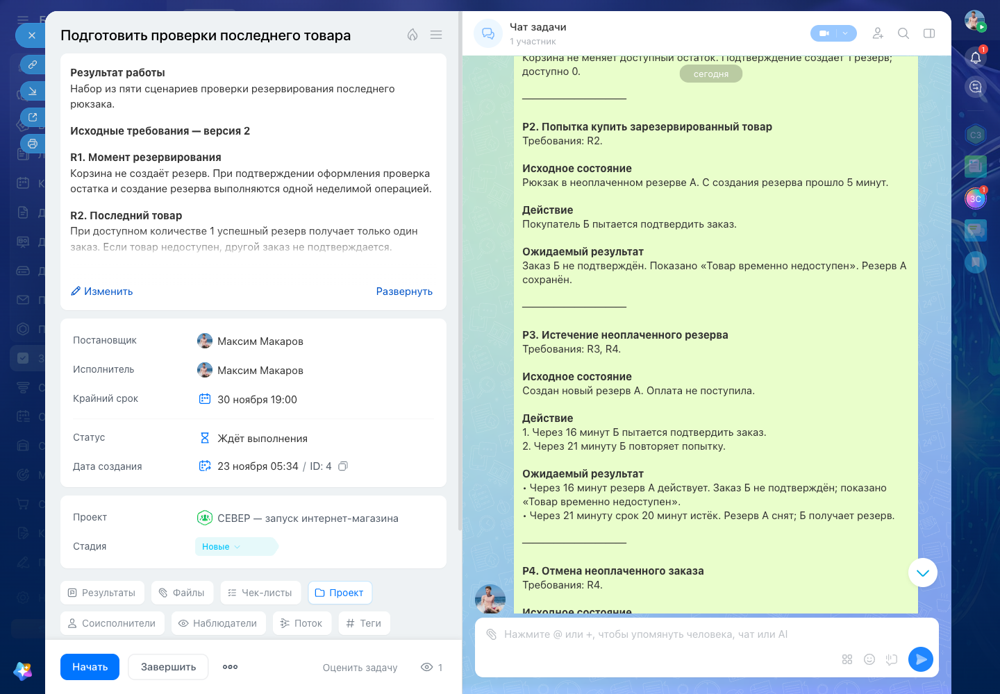
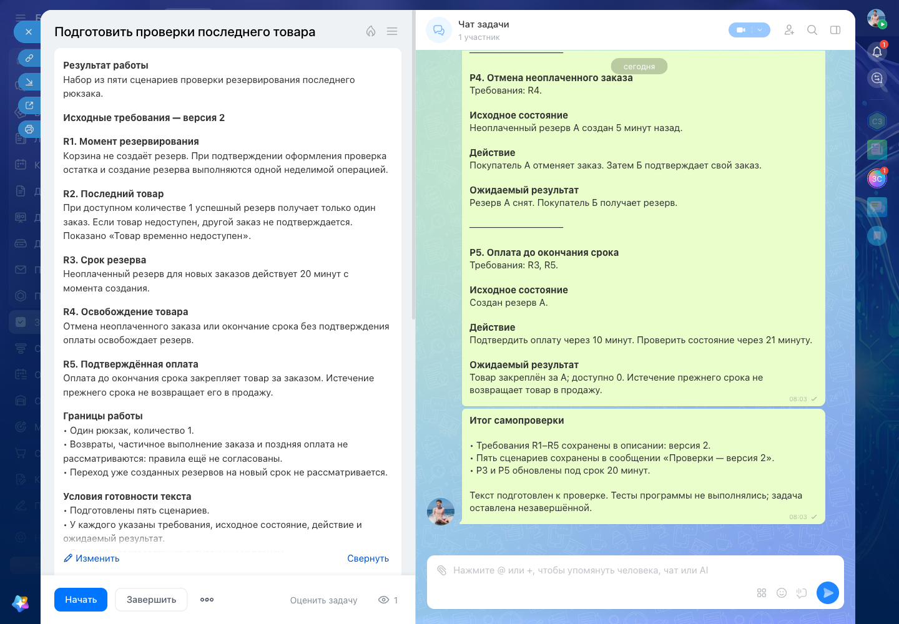

Управление программными проектами
03 / 18 · 90 минут
Уточняем требования
в Битрикс24
Превратим общую постановку в задачу, которую можно выполнить и проверить. Вопросы, договорённости и проверки сохраним в проекте с прошлой пары.
- Время
- 90 минут
- Где работаем
- Проект «СЕВЕР»
- Что нужно
- Результаты практики 2
- Что получим
- Уточнённую задачу и проверки
Задать вопросы, от ответов на которые зависит поведение магазина.
Отделить согласованные условия от предположений.
Описать конкретные случаи и учесть изменение заказчика.
01Продолжаем существующую задачу · 10 минут
На прошлой паре мы сохранили правила резервирования последнего рюкзака. Теперь нужно подготовить проверки этих правил. Для этого в проекте уже есть задача «Подготовить проверки последнего товара».
Правила опубликованы в чате завершённой задачи «Описать правила резервирования последнего товара». Используем этот текст как исходные данные. Продолжим незавершённую задачу о проверках.
Откройте результат предыдущей практики и найдите в чате задачи о правилах срок 15 минут. Пока это исходное условие; позже мы изменим его по новой договорённости.
«Покупатель должен оформить заказ, если рюкзак доступен. Двум покупателям нельзя продать последний рюкзак. Если заказ не оплачен, товар должен вернуться в продажу».
Такое пожелание объясняет цель, но оставляет неопределённости. Нужно уточнить момент резервирования, срок ожидания оплаты и результат отказа второму покупателю. Без этих условий разработчик и проверяющий могут принять разные решения.
Делаем
- Откройте проект с прошлой пары
Найдите «СЕВЕР — запуск интернет-магазина» и его задачи. Используйте своё рабочее пространство: новый портал и новый проект для этой пары не нужны.
- Найдите задачу о проверках
Откройте «Подготовить проверки последнего товара». Прочитайте исходное описание. Если задача не была создана, сначала выполните соответствующее задание предыдущей практики.
- Сверьте исходные правила
В соседней вкладке браузера откройте результат задачи о резервировании. Выпишите согласованные условия: резерв при оформлении, 15 минут на оплату, снятие при отмене или истечении срока.
На следующих кадрах показана карточка после выполнения примера. Слева уже находится описание версии 2, а справа — сообщения разных этапов. При выполнении идите по шагам текста: сначала согласуйте 15 минут, затем внесите изменение до 20 минут. Имена, даты и номер задачи в вашем портале будут другими.

Разбираемся
На этой паре мы готовим текст требований и проверок. Работающий магазин ещё не создан. Успешно написанный сценарий проверки не доказывает, что программа выполняет его правильно.
02Вопросы заказчику · 15 минут
Вопрос полезен, если ответ меняет правило магазина или ожидаемый результат проверки. «Всё ли должно работать правильно?» не помогает выбрать поведение. «Снимается ли резерв сразу после отмены?» помогает.
| Неясность | Точный вопрос | На что влияет ответ |
|---|---|---|
| Товар лежит в корзине | Добавление в корзину уже резервирует рюкзак или резерв возникает при подтверждении оформления? | Может ли другой покупатель заказать этот товар. |
| Оплата ещё не пришла | Сколько действует резерв и от какого события отсчитывается время? | Когда товар снова доступен. |
| Последний рюкзак занят | Что увидит второй покупатель и будет ли его заказ подтверждён? | Сообщение и состояние второго заказа. |
Запись в чате сохраняет ход обсуждения. Другой участник увидит, что уточняли и на какой ответ опирались. Итоговые правила позже перенесём в описание, чтобы их не пришлось собирать из переписки.
Делаем
- Подготовьте четыре вопроса
Сформулируйте свои вопросы о моменте резерва, сроке, отмене и результате второго оформления. Если ответ уже есть в прошлом результате, попросите подтвердить его для текущей работы.
- Запишите вопросы в чат задачи
Начните сообщение словами «Уточнения к проверкам». Пронумеруйте вопросы и отправьте их одним сообщением в задаче о проверках.
- Проверьте отправку
Найдите сообщение в переписке. Убедитесь, что все вопросы сохранились полностью.

Ответ заказчика: сверка после своих вопросов
Для дальнейшей работы используем следующие условия примера. Они подтверждают правила прошлой пары и уточняют момент начала отсчёта.
- Корзина не резервирует товар. При подтверждении оформления система проверяет доступное количество и создаёт резерв одной неделимой операцией.
- Резерв действует 15 минут с момента его создания. Подтверждение оплаты до окончания этого срока закрепляет товар за заказом.
- Отмена неоплаченного заказа освобождает резерв. Если срок закончился без подтверждения оплаты, резерв также снимается.
- Если доступный остаток равен нулю, заказ на этот рюкзак не подтверждается. Покупатель видит «Товар временно недоступен».
- В этой задаче проверяем количество 1. Возврат оплаченной покупки, частичный заказ и оплата после окончания резерва требуют отдельных правил и сюда не входят.
Число 15 минут согласовано для этого примера. В другом магазине срок может отличаться. Если ваш прошлый текст отличается от этих условий, отметьте расхождение и приведите постановку к единому варианту.
Теперь у нас есть ответы. Следующий шаг — сделать их доступными в описании задачи, сохранив вопросы и ответы в переписке.
03Требования в описании · 20 минут
Требование — условие, которому должен соответствовать продукт. Оно описывает поведение или свойство магазина. Задача описывает работу человека: например, подготовить проверки этого поведения.
«Не продавайте один рюкзак дважды».
При остатке 1 успешный резерв получает только один заказ.
Подготовить проверки резервирования последнего рюкзака.
В задаче о проверках требования нужны как основание: по ним исполнитель определяет ожидаемые результаты. Не будем менять смысл задачи и поручать в ней разработку всего магазина.
Делаем
- Сохраните подтверждённые ответы в чате
Добавьте сообщение с заголовком «Согласованные условия — версия 1». Запишите подтверждённые ответы своими словами без изменения смысла.
- Уточните описание задачи
Сохраните её название. Нажмите «Изменить» под описанием карточки. В открывшемся редакторе отделите ожидаемый результат работы, исходные требования, границы проверки и условия готовности текста. Ниже приведён образец обновлённого описания.
- Сохраните изменения и перечитайте описание
После редактирования нажмите «Сохранить». Убедитесь, что в карточке отображается новый текст. Вопросы и сообщения прошлой пары должны остаться в переписке.
Разбираемся
Номера R1–R5 нужны для связи требований с проверками. Буква R здесь обозначает требование. Метки вводятся вручную в тексте. Если изменится R3, мы сможем найти связанные с ним проверки.
Границы показывают, какие вопросы ещё требуют решений. Поведение поздней оплаты нужно отдельно согласовать с заказчиком. Для текущей работы подготовим проверки уже подтверждённых правил.
04Проверки результата · 20 минут
Критерий приёмки — проверяемое условие, по которому принимают результат. «Резерв работает правильно» не указывает, что наблюдать. «При остатке 1 подтверждён только один из двух заказов» задаёт конкретный результат.
Для каждой проверки запишем три части: что было до действия, что произошло и что должно получиться. Сначала рассмотрим второй заказ на уже зарезервированный товар.
Единственный рюкзак зарезервирован заказом А. Оплата ещё не подтверждена, срок резерва не истёк.
Покупатель Б подтверждает оформление заказа на тот же рюкзак.
Заказ Б не подтверждён. Показано «Товар временно недоступен». Резерв А сохранён.
Здесь недостаточно проверить только сообщение: система могла показать отказ, но ошибочно подтвердить второй заказ. Поэтому отдельно указаны состояние заказа и сохранение первого резерва.
Делаем
- Подготовьте проверки P1–P5
Возьмите ситуации из таблицы ниже. Для каждой запишите исходное состояние, действие и результат. Добавьте ссылки на требования R1–R5 обычным текстом.
- Разместите проверки в чате задачи
Начните сообщение с «Проверки — версия 1». Сохраните весь набор одним сообщением, чтобы его можно было прочитать независимо от других записей.
- Проверьте связь с требованиями
Для каждого ожидаемого результата найдите правило, из которого он следует. Если правило отсутствует, запишите уточняющий вопрос вместо произвольного ответа.
| Проверка | Ситуация | Связанные требования |
|---|---|---|
| P1 | Доступен один рюкзак. Покупатель добавляет его в корзину, затем подтверждает оформление. | R1, R2 |
| P2 | Единственный рюкзак уже зарезервирован. Второй покупатель пытается оформить заказ до окончания резерва. | R2 |
| P3 | Рюкзак зарезервирован, оплаты нет. Срок резерва заканчивается; после его снятия другой покупатель оформляет заказ. | R3, R4 |
| P4 | Покупатель отменяет неоплаченный заказ до окончания срока. После отмены другой покупатель оформляет заказ. | R4 |
| P5 | Оплата подтверждена до окончания резерва. Наступает время, в которое неоплаченный резерв был бы снят. | R3, R5 |
Дополнительная проверка: два одновременных оформления
Оба покупателя отправляют запрос при доступном количестве 1. Успешен только один резерв; второй заказ не подтверждён. Проверяем количество успешных резервов. Какой покупатель получит товар, зависит от порядка обработки запросов.
Для проверки работающей программы потребуется способ выполнить запросы одновременно. Два последовательных нажатия одним человеком не подтверждают правильность одновременной обработки. Сейчас мы только описываем сценарий.

Пять записанных сценариев описывают будущую проверку программы. В переписке используем обозначение «ожидаемый результат». Изменение требования потребует пересмотреть связанные с ним сценарии.
05Изменение заказчика · 15 минут
После подготовки проверок заказчик меняет одно условие. Нужно обновить требование и все записи, которые от него зависят.
«Для новых заказов увеличиваем срок неоплаченного резерва с 15 до 20 минут. Остальные правила сохраняются. Уже созданные резервы в этой работе не рассматриваем».
Сначала зафиксируем изменение в чате, затем обновим актуальное описание. Старые сообщения сохранят историю, а описание покажет текущую договорённость. Если в нём останется 15 минут, у исполнителя будет два противоречащих источника.
Делаем
- Запишите причину изменения
Отправьте сообщение «Изменение условий: для новых заказов резерв 20 минут вместо 15. Основание — новая договорённость с заказчиком. Пересматриваю R3 и связанные проверки».
- Обновите описание
Измените срок в R3 и обозначьте набор требований как версию 2. Сохраните остальные правила. Укажите в границах, что переход уже созданных резервов на новый срок сюда не входит.
- Пересмотрите проверки
Подготовьте сообщение «Проверки — версия 2» с полным актуальным набором. В P3 измените момент окончания резерва. В P5 проверьте, что указан новый срок. В P2 и P4 сверьте используемые вами времена с новым условием.
- Проверьте промежуточный момент
Добавьте к P3 наблюдение: через 16 минут после создания нового неоплаченного резерва рюкзак ещё недоступен другим заказам. После 20 минут без подтверждения оплаты резерв снимается.


Сравним состояния нового неоплаченного резерва при двух сроках. В обоих вариантах отсчёт начинается с создания резерва; отмены и оплаты нет.
| Прошло с создания | Срок 15 минут | Срок 20 минут |
|---|---|---|
| 14 минут | Резерв действует. | Резерв действует. |
| 16 минут | Резерв снят. | Резерв действует. |
| 21 минута | Резерв снят. | Резерв снят. |

Промежуточная проверка различает старое и новое поведение. Если проверить только состояние через 21 минуту, ошибочная система со старым сроком тоже покажет свободный товар. Проверка через 16 минут обнаружит, что она освободила резерв раньше согласованного времени. Сверим это условие с сохранённой карточкой перед сдачей.
06Самопроверка и сдача · 10 минут
Перед сдачей перечитайте описание и последнюю версию проверок. Они должны объяснять работу без устных дополнений. Текст в чате и описание выполняют разные функции: переписка хранит решения, описание задаёт действующие условия.
Делаем
- Проверьте сохранение
Обновите страницу клавишей F5. Откройте ту же задачу и убедитесь, что в описании осталась версия 2, а в чате — вопросы, договорённости и обе версии проверок.
- Выполните самопроверку по списку
Сопоставьте свою карточку с условиями ниже. Если нашли расхождение, исправьте описание или подготовьте новое уточняющее сообщение.
- Сохраните итоговое сообщение
Укажите, какой текст подготовлен, где находится актуальная версия и что остаётся за границами. Задачу оставьте незавершённой до проверки подготовленного текста. Она не подтверждает готовность сайта.
Сопоставим два места хранения договорённостей. Оба нужны для проверки: одно показывает актуальные условия, другое объясняет, откуда они появились.
| Описание задачи | Чат задачи |
|---|---|
| Требования версии 2, резерв 20 минут, границы и условия готовности текста. | Вопросы, подтверждённые ответы, причина изменения и версии проверок. |
Описание отвечает на вопрос «что действует сейчас», переписка — «как это согласовали». Проверьте обе части по списку ниже.
- Сохранены исходная задача и её связь с проектом «СЕВЕР».
- В чате есть четыре содержательных вопроса и подтверждённые условия.
- Описание содержит результат работы, требования R1–R5, границы и условия готовности текста.
- В актуальном описании указан резерв 20 минут для новых заказов.
- У проверок P1–P5 есть исходное состояние, действие, ожидаемый результат и номера требований.
- Версия 2 проверок учитывает новый срок, включая наблюдение через 16 минут.
- Записи не называют будущие проверки успешно выполненными тестами программы.
Предъявите ссылку на задачу и покажите её описание и переписку. Объясните на примере P3, почему проверки изменились после новой договорённости. При индивидуальной работе добавьте отметку о самопроверке с одним найденным исправлением. Если исправления не понадобились, укажите, какие требования сопоставили с проверками.


Теперь в задаче сохранены согласованные требования и связанные с ними проверки. Эти записи станут основанием для планирования работ.
07Короткий словарь
- Требование
- Проверяемое условие для продукта. Например, только один заказ получает последний рюкзак.Остаток 1 + два запроса → один успешный резерв
- Задача
- Работа с ожидаемым результатом и ответственным исполнителем. Здесь результатом работы станет текст проверок.Требования R1–R5 → работа исполнителя → проверки P1–P5
- Критерий приёмки
- Условие, по которому принимают результат. Для текста проверок — наличие исходных условий, действия и однозначного результата.Ожидаемые условия ↔ предъявленный результат
- Сценарий проверки
- Описание исходного состояния, действия и ожидаемого результата. Сам текст сценария не означает, что программа проверена.Есть резерв → отмена заказа → товар снова доступен
- Границы работы
- Согласованное включение и исключение ситуаций. Здесь поздняя оплата не входит в проверки.В работе: неоплаченный резерв · За границами: возврат покупки
- Резерв
- Временное закрепление товара за заказом. Он уменьшает количество, доступное другим покупателям.Доступно 1 → резерв 1 → доступно 0
- Версия
- Обозначение состояния текста после согласованных изменений. Номера версий в этой практике вводятся вручную.Версия 1: 15 минут → изменение → версия 2: 20 минут
- Прослеживаемость
- Связь требования с зависимыми от него проверками. Она помогает найти записи, которые нужно пересмотреть.Изменилось R3 → перечитать P3 и P5
- Чат задачи
- Переписка, связанная с конкретной задачей. Здесь сохраняются вопросы, решения и тексты проверок.Вопрос → ответ → изменение → новая версия
Источники и особенности примера
- Официальный сайт Битрикс24.
- Предыдущая практика: создание проекта, постановка задачи и сохранение результата в чате.
- Ответы заказчика, сроки 15 и 20 минут и требования R1–R5 — условия разбираемого примера. Они не описывают правила реального магазина.
- Полный набор требований к интернет-магазину здесь не составляется. Поведение поздней оплаты, возвратов и переходных резервов требует отдельного согласования.
- Специальные функции управления требованиями, AI-помощник, автоматизация и платные расширения для этой работы не нужны. Кадры сняты в действующем демонстрационном портале 23.11.2026. Проверены открытие карточки, чат, редактор и сохранённое описание. Доступность этих элементов на любом тарифе не подтверждена; расположение кнопок может отличаться.